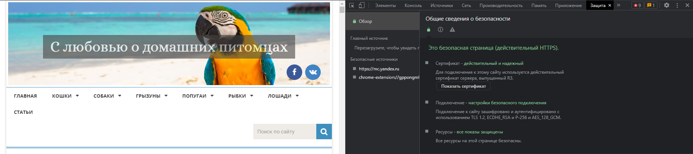
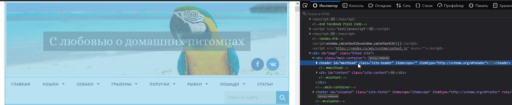
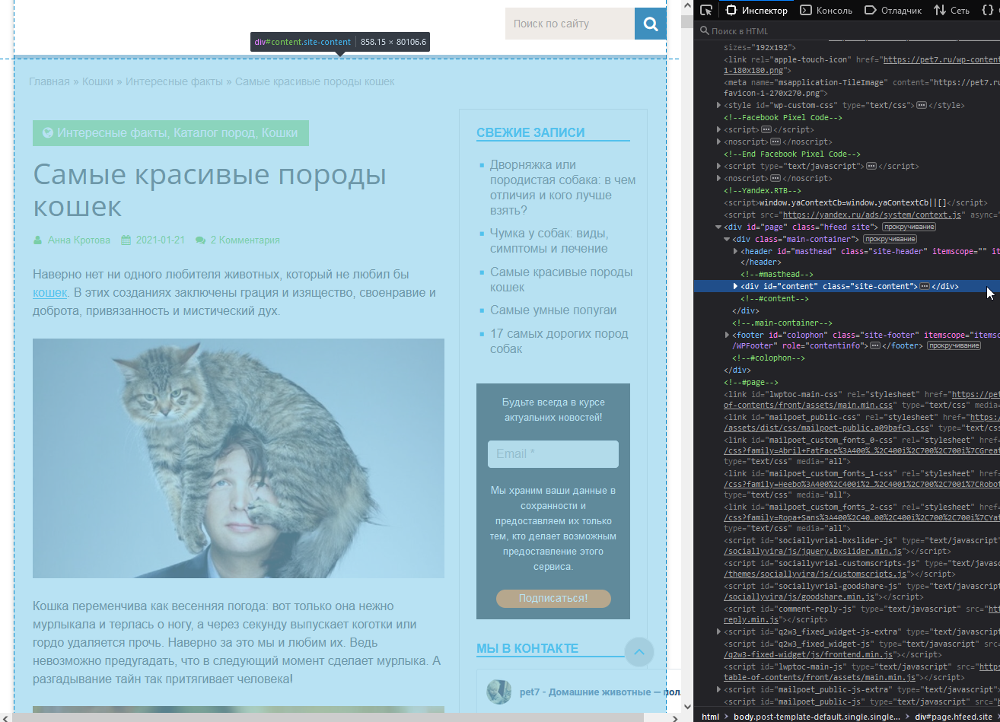
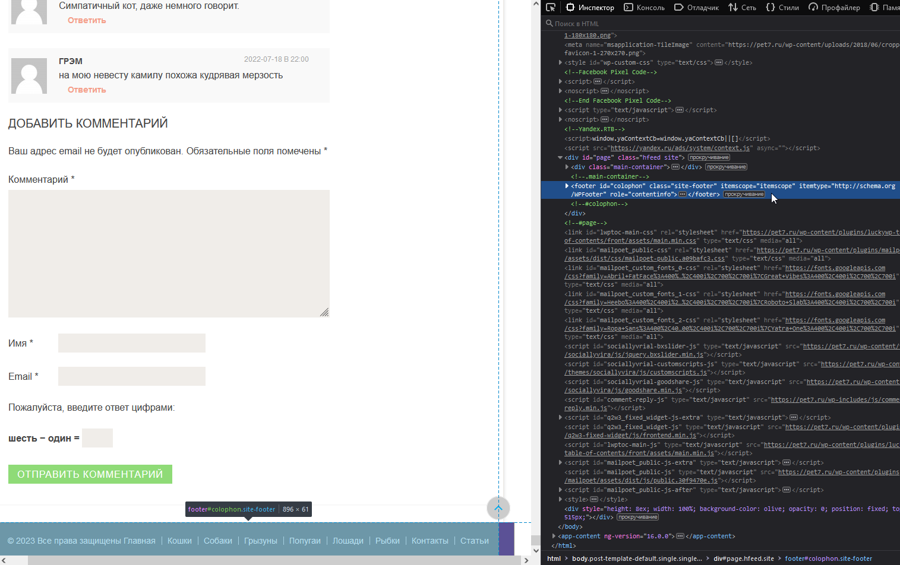
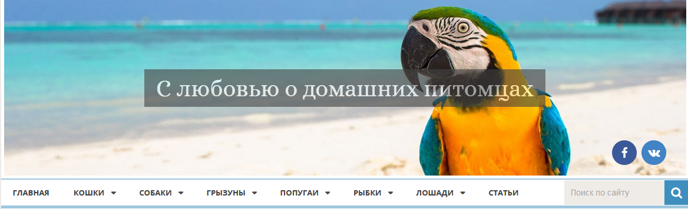
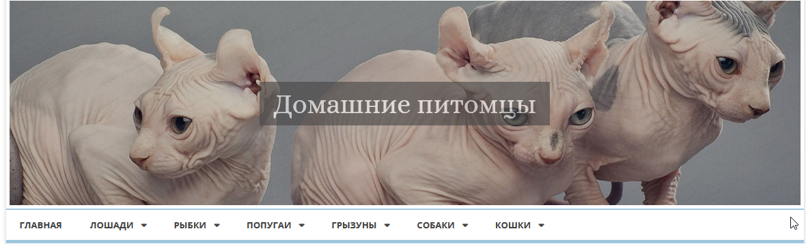

Задача: на основе сайта
https://pet7.ru/koshki/interesnye-fakty-koshki/samye-krasivye-porody-koshek/
- Определите, на каком протоколе работает сайт.
- Проанализируйте структуру страницы сайта. Найдите и покажите в коде хедер, футер и контент.
- Внесите не менее 2 изменений на страницу с помощью инструмента разработчика и представьте скриншоты было/стало.
- Создайте прототип низкой детализации (дополнительное задание, если на семинаре дошли до задания №8).
1. Сайт работает по защищенному протоколу https
2. Структура сайта
Блок Header

Блок Content

Блок Footer

3.Внесенные изменения
Изменение были проделаны в шапке сайта! Для отображение изменений был использован плагин До/После - Cocoen.
- Передлан главный заголовок в слайдере картинок.
- Удален блок с социальными кнопками.
- В меню удален раздел Статьи.
- В самом меню изменен порядок разделов с конца в начало.
- Удалена форма поиска.

